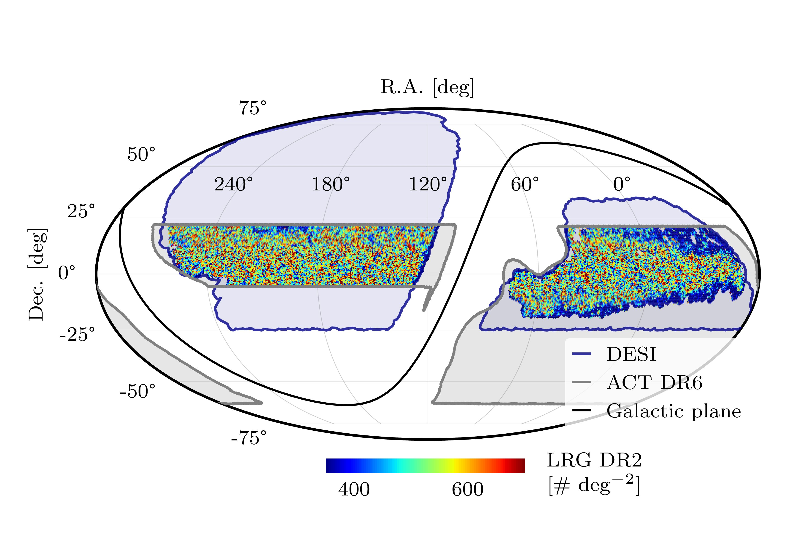
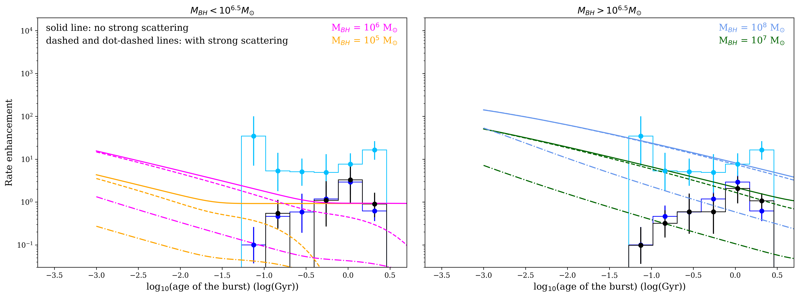
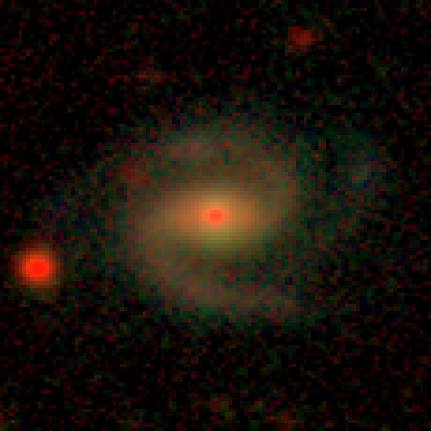
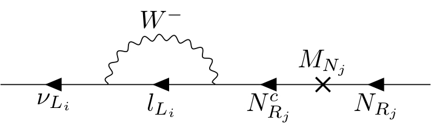

Galaxy Clusters
Using $Λ$CDM and Padé-(2,1) cosmography, we study directional variations in the Hubble constant, $H_0$, using galaxy cluster and Type Ia Supernovae (from Pantheon Plus) by the hemisphere decomposition method.…
Using $Λ$CDM and Padé-(2,1) cosmography, we study directional variations in the Hubble constant, $H_0$, using galaxy cluster and Type Ia Supernovae (from Pantheon Plus) by the hemisphere decomposition method.…

Joint analyses of high-resolution CMB temperature maps with galaxy surveys provide a unique way to reconstruct the radial velocity field of the underlying matter distribution via the kinematic Sunyaev-Zeldovich (kSZ) effect.…

Tidal disruption events (TDEs) can be observed when stars get too close to supermassive black holes and are torn apart and accreted. The delay time distribution of TDEs, or rate of TDEs as a function of time since a burst of star formation, can be used to determine what mechanisms influence the TDE…

Using DESI SV3 spectroscopic group centrals together with deep HSC photometric data, we measure the conditional luminosity functions (CLFs) of central and satellite galaxies, separately for red and blue populations, in dark matter halos spanning $M_h\sim10^{12}- 10^{15}M_{\odot}$ and $0<z<1$.…
Compact, steep-spectrum radio sources are key tracers of exotic astrophysical objects such as pulsars and high-redshift radio galaxies. All-sky radio surveys at different frequencies, like the TIFR-GMRT Sky Survey (TGSS) and the NRAO VLA Sky Survey (NVSS), have been usually exploited to identify suc…
The letter studies phenomena like gravitational wave propagation and gravitational lensing using the celebrated Raychaudhuri equation (RE) in the weak field limit. Newtonian analogue of Relativistic RE has been explored.…

Considering $Z_4$ symmetry in Type I seesaw scenario, one could obtain mass-squared differences of light neutrinos, mixings and $CP$ violating phase within $3 σ$ confidence level based on neutrino oscillation data.…
This paper investigates the optical and dynamical properties of a static spherically symmetric black hole in the presence of a Kalb--Ramond (KR) field coupled to perfect fluid dark matter (PFDM).…
While supersymmetric models provide a solution to the big hierarchy problem, natural SUSY is also allowed by the little hierarchy problem. In supersymmetric models which include the Peccei-Quinn (PQ) solution to the strong CP problem, one expects the presence of an axion-axino-saxion supermultiplet…
It is shown that a duplication of the hypercharge, which is identical for the normal sector but different for the dark sector, may manifestly address neutrino mass and dark matter.